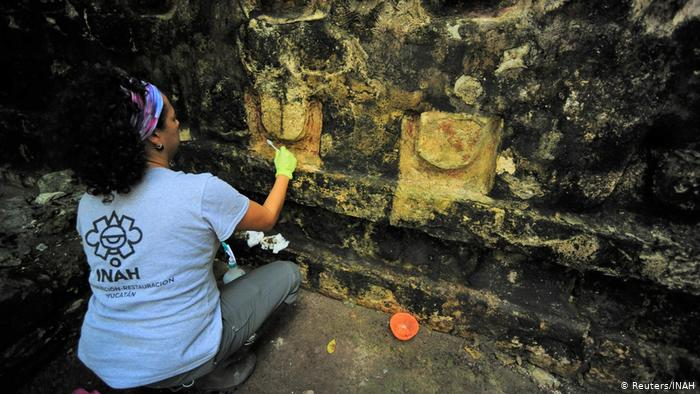

LIVE England chase 284 against South Africa
CRICKET

Mars and Venus will appear just a finger's width apart in the night sky on Monday and Tuesday
SCIENCE & ENVIRONMENT

Ancient Mayan palace discovered in Mexico city
Ancient Mayan palace discovered in Mexico city
ARTS & HISTORY